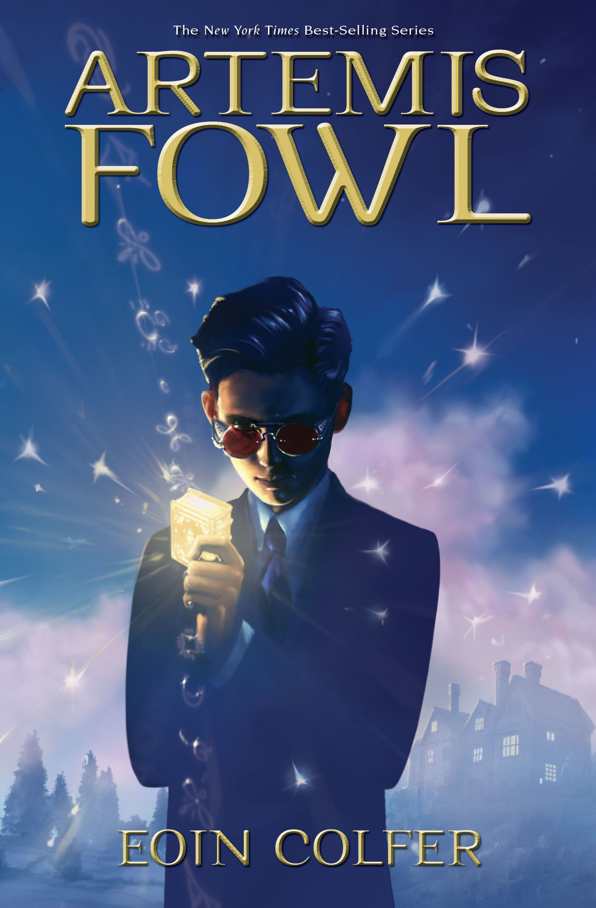

Artemis Fowl

Synopsis:
Artemis Fowl II is the son of a European crime lord, Artemis Senior. At the beginning of the book, his father has disappeared, along with the family’s fortune, and as a result his mother has gone into a catatonic state. Along with his friend and bodyguard Butler, Fowl discovers the existence of fairies and in order to capture one, decodes their Book. He eventually manages to capture LEPrecon officer Captain Holly Short, whom he then proceeds to hold hostage for money.
LEPrecon Commander Julius Root soon finds out, and leads an attack against the “Mud Man” what the fairies refer to humans as in order to take Holly back. To do this, they recruit the fabulously flatulent dwarf Mulch Diggums, to tunnel into Fowl Manor. However, Fowl remains ahead of the posse and manages to escape unharmed.
The desperate fairies attempt to stop time and “blue rinse” Fowl’s house (which works like an atomic bomb) except that it only affects living beings. However, Fowl notices that his mother has, because of her condition, escaped the stop. He uses some of her sleeping pills to escape, to the surprise of the fairies.
Artemis gets to keep the gold, which is actually a ransom fund for the LEPrecon, but exchanges half of it in order to revive his mother…..
|
Artemis Fowl and the Arctic Incident
Synopsis:
Artemis Fowl wants to find his father, held hostage in Russia; Holly Short wants to find who’s supplying the goblins with human technology; Foaly wants to find out who’s disabled all the LEP Technology and pointed the finger at him. Artemis has received a ransom demand for his father but is captured by the LEP who suspect him of supplying the goblins with dangerous Human technology (batteries). He convinces them he’s innocent and agrees to help them if they help him free his father. Meanwhile, down in the underground world, chaos has arisen. An unknown traitor has stolen forbidden weapons and armed a horde of trolls, setting them loose to wreak havoc on the citizens. Clues lead Captain Holly Short straight to Artemis, and she exacts a small bit of revenge by kidnapping him, just as he once kidnapped her. But soon she learns that Artemis isn’t behind the chaos, and if she’s to have any hope of stopping it, she will need his help. As a result, these onetime adversaries must now join forces—a mix that proves to be both charming and volatile.
|
Artemis Fowl and the Eternity Code

Synopsis:
In the third Artemis Fowl instalment the 13-year-old criminal mastermind takes on his most cunning adversary yet — American billionaire Jon Spiro, owner of the high-tech firm Fission Chips. While recuperating Artemis Fowl’s father, AF Senior, stuns all with his pronouncement that he wants the family to turn over a new leaf and stay on the right side of the law. Not surprisingly Artemis has other plans for one last heist, after which the Fowls will become a law abiding family. Anyway Artemis had been planning the job long before his father’s damascene conversion to all things legal. Anyway, what could go wrong? Everything, as it turns out. Artemis’s scheme to extract one metric ton of gold from Spiro, in exchange for keeping the C Cube, a mega computer (built from parts stolen from the fairies), off the market, implodes spectacularly. In order to save Butler, his bodyguard, and set things back to rights in the fairy world, Artemis joins forces with Butler’s sister Juliet and drafts the help of his nemesis Captain Holly Short, Foaly the computer nerd and the breezy, dwarf Mulch Diggums. The die is cast for all kinds of interwoven mayhem that culminates with the climactic break-in at Chicago’s Spiro Needle. Another Artemis exploit that matches the action and suspense of the first two Artemis Fowl books. Twists and turns get better as Artemis schemes his way into Spiro’s lair, and the novel slaps readers with a mind-spinning finale. Like a fine wine, Fowl’s brilliance gets better with age.
|
Artemis Fowl and the Opal Deception
Synopsis:
Artemis Fowl steals the world’s most sought-after painting, but becomes entangled in a revenge bid by Opal Koboi against those who thwarted her previously. Holly Short races to rescue Artemis but they are captured by Opal and left to die in a troll-infested amusement park. Butler, meanwhile, teams up with Mulch Diggums, the flatulent dwarf, to rescue them and to defeat Opal. ‘It’s a trap, Commander,’ said Holly without hesitation. ‘We were the ones at Koboi Labs a year ago. The goblins hold us responsible for the rebellion’s failure. If we go in there, who knows what’s waiting for us?’
Root nodded approvingly. ‘Now you’re thinking like a major. We’re not expendable. So what are our options, Trouble?’
‘If you don’t go in, many will die. If you do, you might.’
‘Not a nice set of options. Don’t you have anything good to tell me?’
Trouble lowered his helmet’s visor and consulted a mini-screen on the perspex. ‘We managed to get the terminal’s security scanners back on line and ran substance and thermal scans. We found a single heat source in the access tunnel, so Scalene is alone, if it’s him. Whatever he’s doing in there, he doesn’t have any known form of weaponry or explosives. Just a few beetle bars and some good old H2O.’
‘Any magma flares due?’ asked Holly
Trouble ran his index finger along a pad on his left glove, scrolling down the screen on his visor. ‘Nothing for a couple of months. That chute is intermittent. So Scalene is not planning to bake you.’
|
Artemis Fowl and the Lost Colony
Synopsis:
Ten thousand years ago, humans and fairies fought a great battle for the magical island of Ireland. When it became clear to the fairy families that they could never win, they decided to move their civilisation underground and keep themselves hidden from the humans. All the fairy families agreed on this, except the eighth family, the demons.
The demons planned to lift their small island out of time until they had regrouped and were ready to wage war on the humans once more. However, the time spell went wrong, and the island of Hybras was catapulted into Limbo, where it has remained for ten thousand years.
Now, the tainted time spell is deteriorating and demons are being sucked back into the present space and time. The fairy Council are naturally concerned about this and are monitoring any materialisations. When the spell’s deterioration accelerates, the materialisations become unpredictable. Even the fairy scientists cannot figure out where the next demon will pop up.
But someone can. Artemis Fowl, the teenage criminal mastermind, has solved temporal equations that no normal human should be intelligent enough to understand. But Artemis Fowl is no normal human.
So when a confused and frightened demon pops up in a Sicilian theatre, Artemis Fowl is there to meet him. Unfortunately, he is not the only one. A second, mysterious party has also solved the temporal equations, and manages to abduct the demon before Artemis can secure him.
This is a disaster for the fairy People, because this demon was no ordinary fairy. He was the last demon warlock, and as such held the key to the survival of the entire demon race.
It is up to Artemis and his old comrade Captain Holly Short to track down the missing demon and rescue him before the time spell dissolves completely and the lost demon colony returns violently to Earth.
|
Artemis Fowl and the Time Paradox
Synopsis:
Artemis Fowl is facing his deadliest enemy yet. Himself.
Artemis is no stranger to trouble. In fact, he’s a magnet for it.
Man-eating trolls, armed and dangerous (not to mention high-tech) fairies, flame-throwing goblins - he’s seen the lot.
He had decided to forego criminal activity of the magical kind. However…
Now his mother is gravely ill. Artemis Fowl must travel back through time to steal the cure from the clutches of the young criminal mastermind… Artemis Fowl.
That’s right. With fairy ally Captain Holly Short by his side, Artemis is going back in time to do battle with himself.
Let the misadventure begin..
|
Artemis Fowl and the Atlantis Complex
Synopsis:
ARTEMIS FOWL’S CRIMINAL WAYS HAVE FINALLY GOT THE BETTER OF HIM . . .
Young Artemis has frequently used high-tech fairy magic to mastermind the most devious criminal activity of the new century. Now, at a conference in Iceland, Artemis has gathered the fairies to present his latest idea to save the world from global warming.
But Artemis is behaving strangely - he seems different. Something terrible has happened to him . . . Artemis Fowl has become nice.
The fairies diagnose Atlantis Complex (that’s obsessive compulsive disorder to you and I) - it seems dabbling in magic has damaged Artemis’ main weapon: his mind. Fairy ally Captain Holly Short doesn’t know what to do. The subterranean volcanoes are under attack from vicious robots and Artemis cannot fight them. Can Holly get the real Artemis back before the robot probes destroy every human and life form?
This eagerly-awaited adventure is now out in paberback with a fabulous new cover-look to celebrate ten years of Artemis action.
|
Artemis Fowl and the Last Guardian
Synopsis:
Opal Koboi, power-crazed pixie, is plotting to exterminate mankind and become fairy queen.
If she succeeds, the spirits of long-dead fairy warriors will rise from the earth, inhabit the nearest available bodies and wreak mass destruction. But what happens if those nearest bodies include crows, or deer, or badgers – or two curious little boys by the names of Myles and Beckett Fowl?
Yes, it’s true. Criminal mastermind Artemis Fowl’s four-year-old brothers could be involved in destroying the human race. Can Artemis and Captain Holly Short of the Lower Elements Police stop Opal and prevent the end of the world?
|